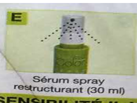

如果您还没在48小时之内做过该产品的敏感测试，请先完成下文的“敏感测试”来确保该产品的安全性
使用说明
1：准备
开始前请戴上手套（F）并用毛巾盖在肩膀上以防止染色剂弄脏衣服。将染色剂（A）倒入装有彩色显影剂（B）的瓶子里,拧紧盖子然后充分晃动瓶子至两者混合均匀。打开瓶子上面的喷嘴并立即将混合好的染色剂涂抹在头发上。注意：如果室温较高（高于25摄氏度）或者涂抹过程需要花很长时间（长头发），请在一个塑料或者玻璃容器中混合染色剂和彩色显影剂（混合过程中不可使用用金属器具）。
2：染发（请在使用前保证头发干燥）
对于未染过色的头发:
为了使混合染色剂涂抹均匀，请先用梳子将所有头发分成四个区域。然后在每个区域上用装有混合染色剂的瓶子的喷嘴把混合染色剂涂抹在头发上（先涂抹发根然后再涂抹至整个头发）。请用完所有的混色染色剂并轻轻按摩头发以确保所有需要染色的头发都被覆盖。涂抹完毕后等待30分钟以完成染发。如需染得更深或头发不好染，可以多等待10分钟以确保染色效果。
对于染过色的头发：
涂抹混合染色剂的时候可以先涂抹发根，等20分钟后再涂抹至整个头发。最后再等十分钟以完成染发过程。
3. 漂洗和护理
在漂洗前，先用少许温水打湿头发上的染色剂，然后用画圈的动作按摩头发。之后再用清水漂洗头发直到漂洗过的水没有颜色。最后再用固色洗发水（C)清洗头发。
再次漂洗干净后将再生发膜（D)涂抹在头发上并轻轻的按摩头发2分钟。漂洗干净后将再生精华（E）均匀喷撒到头发上。在下次染色之前每周可喷两到三次以保护头发。
敏感测试
由于该产品可能会给某些人造成严重的皮肤炎症，所以在每次使用之前有必要先进行如下敏感测试以确保安全性。
该测试可以在耳朵后面或者臂弯里的一小块皮肤上进行。首先请用清水，肥皂或者酒精认真清洗测试用的皮肤。然后把少许混合染色剂涂抹在皮肤上并在48小时之后将染色剂洗去。如果涂抹过混合染色剂的皮肤没有明显的疼痛或发炎症状，那么您就可以安全的使用本品。
该测试必须在每次染发之前进行。请勿用该染发剂染眼睫毛或眉毛。染眼睫毛或眉毛的时候可能会造成严重的眼部发炎甚至失明。
使用须知
- “黑色指甲花”纹身可能会增加对本品过敏的可能性。
- 染色剂（A）和彩色显影剂（B)的混合比例应该是1:1.5。
- 如果您以前使用过含有黑指甲花的染发剂或其他类型的渐近染发剂，请在使用本品前确保之前的染色剂已经完全洗去。
- 本品含有二氨基苯和过氧化氢。
- 如果您以前有过对染发剂的不良反应，请勿用本品。
- 如果您脸上有皮疹，头皮敏感，疼痛或有损伤的时候，请勿用本品。
- 如果您以前曾经对黑色指甲花纹身有严重的不良反应，请勿用本品。
- 请不要将混合好的染色剂放在瓶子里太久。染色剂混合完成后请马上使用。如果有剩余请不要存放，应该立即扔掉。
- 头发经过烫发，漂白或拉直后的14天内不可使用本品。
- 请尽量避免将本品溅到其他皮肤上。本品不可用来染除了头发以外的东西，如眼睫毛或眉毛。
- 如果本品不小心溅入眼睛，请立即用大量清水彻底冲洗。如果不适感持续，请咨询医生。
- 在使用本品的时候请用提供的手套保护双手。
- 请勿与其他染发产品混用。
- 请在通风良好的环境下使用本品。
- 请勿使用金属容器盛装或混合本品。我们推荐您使用玻璃容器。
- 请勿吸入或吞食本品。
- 如果在使用本品的过程中有灼热，蛰痛或者瘙痒的症状，请马上用大量清水冲洗。
- 请在使用本品后用清水充分漂洗头发。
- 16岁以下请勿使用。
- 请放在儿童无法触摸到的地方。
- 请在室温（10-25摄氏度）下储藏并避免光照。